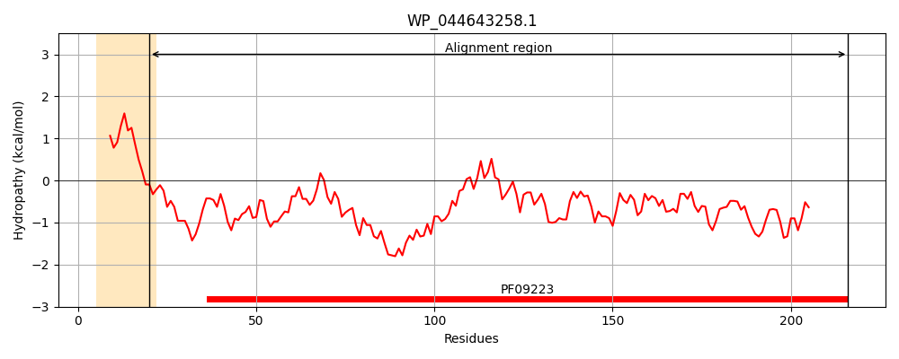
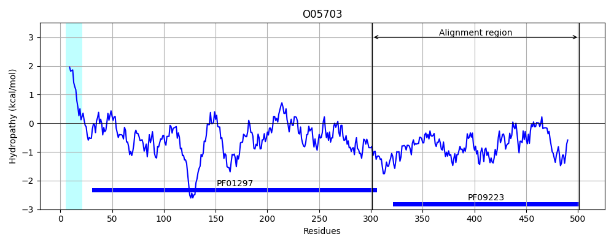
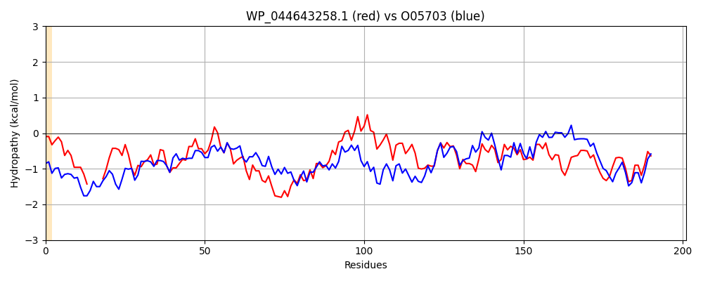

Hit Accession: O05703
Hit TCID: 3.A.1.15.3
Hit Description: gnl|BL_ORD_ID|6750 gnl|TC-DB|O05703|3.A.1.15.3 ADCA PROTEIN (FRAGMENT) - Streptococcus pneumoniae.
Mach Len: 201
e:0.000000
Query TMS Count : 1
Hit TMS Count: 1
TMS-Overlap Score: 0.000000
Predicted Substrates:CHEBI:10113;zinc(2+)
BLAST Alignment:
Score: 471 , Bit scores: 186 bits, E-value: 2.0e-56, Alignment length: 201, Percentage identity: 47
Query: 20 QAFAHGNHNHGPAL----TDIERQASEGIFADKNVQDRALSDWEGVWQSVNPYLLNGDLDPVLEQKAKKPGGKSVEEYRAYYKKGYATDVEQIGIENDVIEFHVGDVVNSCKYRYSGYKILHYASGKKGVRYLFECQQGDANAPKFVQFSDHIIGPRKSQHFHIFMGNESQEALLKEMDNWPTYYPYALHKEQIVDEMLHH 216
+A GPA+ + + G F D V+DR LSD+ G WQSV P+L +G D V + KAK G + EY+AYY KGY TDV +I I ++ +EF G Y+Y G KIL Y G +GVR+LFE DA K+VQFSDH + P K++HFHIF G SQEAL +EMDNWPTYYP L ++I EML H
Sbjct: 301 KALKQTTDQEGPAIEPEKAEDTKTVQNGYFEDAAVKDRTLSDYAGNWQSVYPFLEDGTFDQVFDYKAKLTGKMTQAEYKAYYTKGYHTDVTKINITDNTMEFVQGGQSKKYTYKYVGKKILTYKKGNRGVRFLFEATDADAGQFKYVQFSDHNVAPVKAEHFHIFFGGTSQEALFEEMDNWPTYYPDNLSGQEIAQEMLAH 501 | Protein Hydropathy Plots: |
|---|
|  |  |
Pairwise Alignment-Hydropathy Plot:
|
|---|
|  |